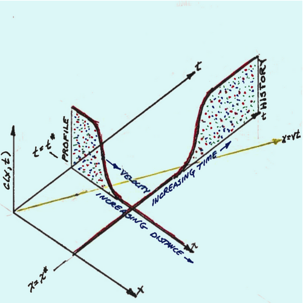

Analytical Models¶
Partial Differential Equations (PDEs) are powerful mathematical tools used to describe and understand a wide range of physical phenomena, from heat diffusion to fluid flow. When dealing with PDEs, two primary approaches are commonly employed: analytical solutions and numerical models.
Analytical Solutions:¶
Analytical solutions to PDEs involve finding exact mathematical expressions that describe the behavior of a system without resorting to approximation or numerical computation. These solutions are derived through mathematical techniques such as separation of variables, Fourier analysis, and Laplace transforms. The advantages of analytical solutions include:
Precision: Analytical solutions provide precise, closed-form expressions that yield exact solutions for specific initial and boundary conditions. This accuracy is particularly valuable in situations where precision is crucial, such as in fundamental scientific research or engineering design.
Insight: Analytical solutions offer deep insight into the underlying physics of the problem. They reveal how various parameters and variables influence the system’s behavior, facilitating a fundamental understanding of the problem at hand.
Computational Efficiency: Analytical solutions are typically computationally efficient, requiring significantly less computational power compared to numerical methods, which can be advantageous when working with complex or time-sensitive problems.
Numerical Models:¶
Numerical models, on the other hand, involve discretizing the domain of the PDE into a grid or mesh and approximating the solution at discrete points. Numerical methods, such as finite difference, finite element, and finite volume methods, are used to solve the resulting system of algebraic equations. The key characteristics of numerical models include:
Approximation: Numerical models inherently involve approximation, as they operate with discretized values. The accuracy of the solution depends on the grid size and the chosen numerical method. Smaller grid sizes yield more accurate results but require more computational resources.
Versatility: Numerical models are versatile and can handle complex geometries and boundary conditions. They are particularly well-suited for solving PDEs that lack analytical solutions or when analytical solutions are impractical due to complexity.
Computational Resources: Numerical models can be computationally intensive, especially for high-resolution simulations or large-scale problems. High-performance computing resources may be necessary for timely solutions.
Comparison:¶
The choice between analytical solutions and numerical models depends on the nature of the problem and the specific objectives of the analysis:
Analytical solutions are preferred when exact, closed-form expressions are achievable, offering precise insights into the system’s behavior. They are particularly useful for fundamental research and for understanding the underlying physics.
Numerical models excel when dealing with complex geometries or when no analytical solutions are available. They offer flexibility and can handle a wide range of practical problems, making them indispensable in engineering, environmental modeling, and simulating real-world scenarios.
Spatial Dimensionality¶
Spatial dimensionality in modeling refers to the number of spatial dimensions or coordinates used to describe the physical or geometric aspects of a system or problem. In various scientific and engineering contexts, models are often used to represent and understand how a system behaves or evolves in space. Spatial dimensionality plays a crucial role in defining the complexity and realism of these models.
Here’s a breakdown of what spatial dimensionality means in modeling:
One-Dimensional (1D) Models: In one-dimensional models, the system or problem is simplified to a single spatial dimension. For example, a heat conduction model in a rod with heat varying only along its length can be represented as a 1D model. These models are suitable for problems with significant simplification in spatial variation.
Two-Dimensional (2D) Models: In two-dimensional models, the system is represented in two spatial dimensions, typically on a flat plane. This is common in scenarios where variations occur both horizontally and vertically. Examples include flow in a thin aquifer or heat diffusion on a flat surface.
Three-Dimensional (3D) Models: Three-dimensional models account for variations in three spatial dimensions, forming a 3D space. These models are used for systems with complex spatial variations in all three directions. Examples include simulating groundwater flow in a 3D aquifer or airflow in a 3D room.
Higher-Dimensional Models: In some cases, particularly in theoretical physics and mathematics, models may involve more than three spatial dimensions. Such models are rare in practical applications but can be used to explore abstract or theoretical concepts.
The choice of spatial dimensionality in modeling depends on the nature of the problem being studied and the level of detail required to capture its essential characteristics. Simplifying a problem to fewer dimensions can make it more tractable and computationally efficient but may lead to a loss of accuracy if important spatial variations are neglected. On the other hand, using a higher spatial dimensionality can provide a more realistic representation of a complex system but may come at the cost of increased computational complexity.
Concentration Profiles¶
In transport modeling, a “concentration profile” refers to the spatial distribution of the concentration of a substance (such as a solute or pollutant) within a medium at a specific point in time. It represents how the concentration of the substance varies across different locations or spatial coordinates within the medium.
The concentration profile is a fundamental concept in the study of transport phenomena, particularly in fields like hydrogeology, environmental science, and chemical engineering. It provides crucial information about how substances disperse, spread, or migrate through various media, such as air, water, soil, or porous materials. Understanding concentration profiles is essential for assessing the movement and behavior of substances in the environment and predicting their impact on ecosystems, human health, or industrial processes.
Key characteristics of a concentration profile include:
Spatial Variation: A concentration profile shows how the concentration of the substance changes as you move from one location to another within the medium. It typically represents this variation along one or more spatial dimensions (e.g., depth, distance, height, or time).
Peak Concentration: The concentration profile often indicates where the highest concentration of the substance occurs within the medium, which is known as the “peak concentration” or “maximum concentration.”
Concentration Gradients: Concentration profiles also reveal the gradients or slopes in concentration, indicating the rate at which the concentration changes over distance or time. Steeper gradients imply faster changes.
Boundary Conditions: The shape and characteristics of the concentration profile are influenced by various factors, including initial conditions, boundary conditions (e.g., sources or sinks), and the transport processes at play (e.g., advection, dispersion, diffusion).
Temporal Evolution: Concentration profiles can change over time as substances are transported, mixed, or degraded within the medium. Dynamic modeling often involves tracking how these profiles evolve.
Concentration profiles are commonly visualized using graphs or plots, with concentration (C) on the y-axis and spatial coordinates (e.g., distance or depth) on the x-axis. The resulting graph provides a visual representation of how the substance’s concentration varies spatially, helping researchers and modelers gain insights into the behavior and fate of the substance in the system.
Concentration Histories¶
In transport modeling, “concentration history” refers to the temporal evolution or record of the concentration of a substance (such as a solute or pollutant) at a specific location or point within a medium over a period of time. It provides information about how the concentration of the substance changes at that particular location as time progresses.
The concentration history is a critical aspect of transport modeling and is used to track and analyze how the concentration of a substance responds to various transport and fate processes, including advection, dispersion, diffusion, chemical reactions, and source/sink terms. It is particularly relevant in fields such as environmental science, hydrogeology, chemical engineering, and pollution assessment. Understanding concentration histories is essential for predicting the behavior of contaminants, the spread of pollutants, and the effectiveness of remediation or mitigation measures.
Key characteristics and components of a concentration history include:
Temporal Variation: The concentration history shows how the concentration of the substance changes over time at a specific location. This temporal variation can reveal important trends, fluctuations, or trends in concentration levels.
Initial Conditions: The concentration history often begins with an initial concentration value at the starting time (t=0). This initial condition represents the state of the substance at the beginning of the simulation or observation period.
Transport Processes: Changes in concentration over time are influenced by various transport processes, including advection (bulk movement of fluid), dispersion (mechanical mixing), diffusion (molecular movement), chemical reactions, and any sources or sinks of the substance.
Boundary Conditions: Concentration histories are also affected by boundary conditions, which may include inflows, outflows, or other interactions at the system’s boundaries.
Equations and Models: Concentration histories are typically generated using mathematical models that describe the relevant transport and fate processes. These models are often based on partial differential equations or discrete numerical methods.
Concentration histories can be visualized using plots or graphs, with time (t) on the x-axis and concentration (C) on the y-axis. This graphical representation allows modelers and researchers to observe concentration trends and patterns. Concentration histories are essential for various applications, such as assessing the impact of contaminants on groundwater quality, tracking the dispersion of pollutants in surface water bodies, monitoring the progress of chemical reactions in industrial processes, and evaluating the performance of remediation strategies.

The image above is an illustration of the \(x-t\) plane, with the vertical axis the \(C(x,t)\) axis. At the source, the concentration is some fixed value. From the origin, moving upward and to the right is the time axis. From the origin, moving downward and to the right is the space (distance) axis. A yellow line in the \(x-t\) plane is \(x=vt\) (sometimes called the trajectory). Along the time axis, is a point in time indicated by \(t^*\). From this point moving downward and to the right is a plot (increasing distance) which is a concentration profile plot. Along the space axis, is a point in space indicated by \(x^*\). From this point moving upward and to the right is a plot (increasing time) which is a concentration history plot.